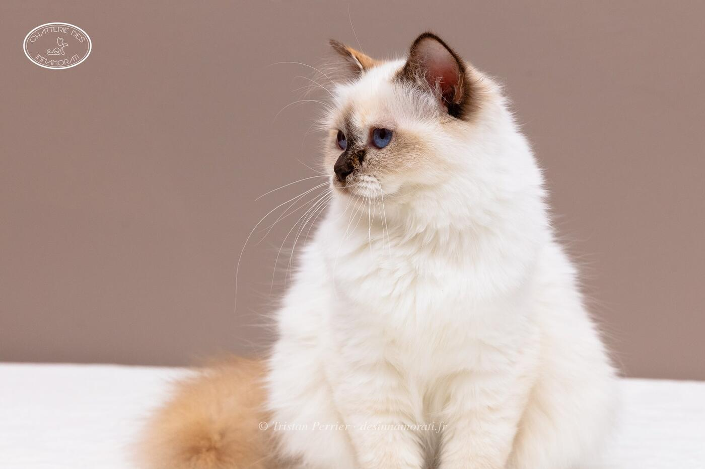

RobeFemelle · Chocolat tortie point
Naissance8 mars 2018
TitresCH
Album5 photos, de septembre 2018 à décembre 2018


Palmarès
2 expositions · 4 jugements2019
- BordeauxCAC EXC2
- BordeauxCAC
- ParisCAC
- ParisCAC
EXC Excellent (classement) · CAC, CACIB, CAGCIB, CACS certificats de champion, champion international, grand champion international et suprême · CAP, CAPIB, CAGPIB, CAPS équivalents pour les chats stérilisés · BIV meilleur de la variété · NOM nommé pour le Best in Show · BIS Best in Show · BOB Best of Best, le meilleur de toute l’exposition
Photos réduites et marquées. Elles appartiennent à la Chatterie des Innamorati et ne peuvent pas être reprises dans une annonce.